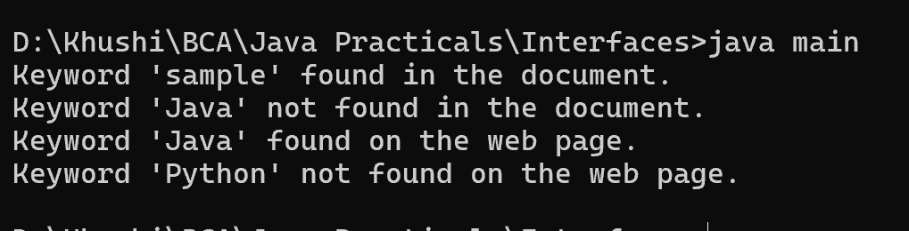

9. Write a Java program to create an interface Searchable with a method search(String keyword) that searches for a given keyword in a text document. Create two classes Document and WebPage that implement the Searchable interface and provide their own implementations of the search() method.
interface Searchable {
void search(String keyword);
}
class Document implements Searchable {
private String content;
public Document(String content) {
this.content = content;
}
@Override
public void search(String keyword) {
if (content.contains(keyword)) {
System.out.println("Keyword '" + keyword + "' found in the document.");
} else {
System.out.println("Keyword '" + keyword + "' not found in the document.");
}
}
}
class WebPage implements Searchable {
private String content;
public WebPage(String content) {
this.content = content;
}
@Override
public void search(String keyword) {
if (content.contains(keyword)) {
System.out.println("Keyword '" + keyword + "' found on the web page.");
} else {
System.out.println("Keyword '" + keyword + "' not found on the web page.");
}
}
}
class main {
public static void main(String[] args) {
Searchable doc = new Document("This is a sample document containing various keywords.");
Searchable page = new WebPage("Welcome to the website. Find information about Java programming.");
doc.search("sample");
doc.search("Java");
page.search("Java");
page.search("Python");
}
}
